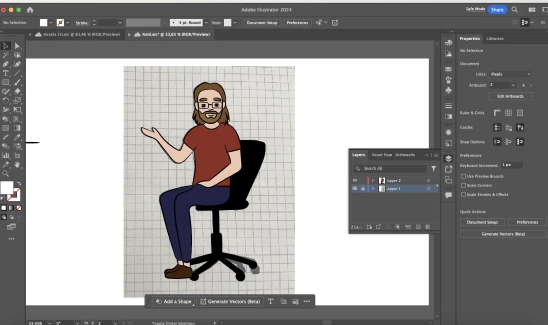

grundlæggende animation
I dette tema arbejdede jeg med at udvikle et interaktivt og animeret spil som en del af et responsivt website. Projektet omfattede hele processen fra idéudvikling og design til kodning og dokumentation. Jeg designede al grafik i Illustrator og udviklede spillet ved hjælp af HTML, CSS og JavaScript med fokus på animation, spilmekanik og brugerinteraktion. Desværre var jeg en del fraværende under temaet på grund af sygdom, hvilket har påvirket mit arbejde. Jeg nåede ikke at integrere lydeffekter og baggrundsmusik i mit spil, og mit website er også mangelfuldt, da jeg kun har formået at færdiggøre spil.html. Projektet gav mig dog stadig værdifuld erfaring med at skabe spilmekanik og designe visuelle elementer, selvom jeg ikke nåede at levere et komplet produkt.
Spilsite
Jeg tegnede skitser, lavede papir-prototype og aktivitetsdiagram. Jeg designede al grafik i Illustrator og udviklede spillet ved hjælp af HTML, CSS og JavaScript med fokus på animation, spilmekanik og brugerinteraktion.

Research og idéudvikling
skitser
papirprototype
aktivitetsdiagram
illustrator
karakterer